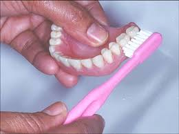

ใช้แปรงสีฟันขนนุ่มชุบน้ำสบู่ น้ำยาล้างจาน หรือยาสีฟันชนิดครีม
แปรงฟันเทียมให้ทั่วทุกด้าน แล้วล้างออกด้วยน้ำสะอาด
ห้ามใช้ยาสีฟันที่เป็นผงหรือยสีฟันชนิดครีมที่ผสมผงขัดที่หยาบ
เพราจะทำให้ฟันเทียมที่เป็นพลาสติกสึก

ฟันเทียมที่ใช้มานานและติดสีน้ำตาล/ดำ มีคราบบุหรี่หรือคราบอาหารที่ล้างไม่ออก
อาจใช้เม็ดฟู่สำหรับแช่ทำความสะอาดฟันเทียมได้